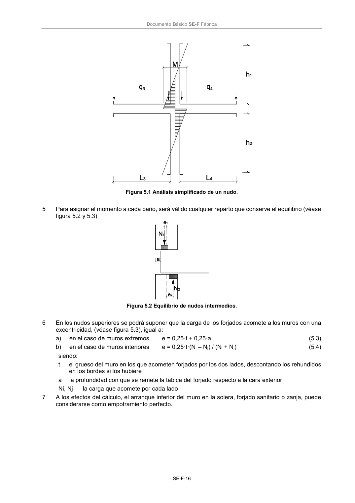

DB-SE-F · Fragmento de PDF p19 · versión 2019-12-20 · capa oficial
Formatos: JSON compacto · Markdown · PDF fuente
Ámbito del documento · texto del ámbito · documento y tablas
ID técnico a0050 · PDF pág. 19-21 · jerarquía no validada por persona · no es capítulo: sin_linea_de_encabezado · padre: raíz · literal original en el contenido: «5.2 Muros sometidos predominantemente a carga vertical 5.2.1 Análisis de solicitaciones»
5.2 Muros sometidos predominantemente a carga vertical 5.2.1 Análisis de solicitaciones 5.2.1 Análisis de solicitaciones 1 La determinación de esfuerzos se realizará de acuerdo con los métodos generales de análisis estruc- tural, utilizando modelos planos o espaciales. 2 En la mayoría de los casos, para el análisis a carga vertical, es suficiente plantear una estructura constituida por elementos de profundidad unidad, en la cual los muros y los forjados se sustituyen por barras con sus mismas características geométricas y de deformación, formando pórticos que ideali- zan la estructura para su cálculo utilizando modelos planos. 3 En general, se podrá modelar las estructuras de muros de carga y forjados como pórticos rígidos para aplicarles cálculo elástico. De manera simplificada, se puede realizar un análisis nudo a nudo, (hipó- tesis elástica y con la fábrica no fisurada), en el que, repartiendo el desequilibrio de momentos de empotramiento, de acuerdo con la rigidez relativa de cada elemento, la suma de los momentos en los tramos superior e inferior de un nudo de piso intermedio, (figura 5.1) resulta: M = (Memp, i – Memp,j) · K / KT (5.1) siendo: Memp,i Memp,j los momentos de empotramiento perfecto del forjado a uno y otro lado, uno con la carga total y otro con sólo la permanente, lo que sea peor K la suma de las rigideces de los tramos de muros en cuestión, cada uno igual a 4EI/h donde: E es el módulo de elasticidad del muro I es el momento de inercia del muro; el de la hoja portante si hay otra que no lo es. h es la altura libre del paño KT la suma de rigideces de las piezas que concurren en el nudo analizado; para las de forjado se tomará nEI/L donde: n es 3 si el nudo opuesto es de fachada, 4 si es interior, 0 si es un vuelo EI es la rigidez del forjado L es la luz libre del forjado 4 Como la unión entre el muro y el forjado no es perfectamente rígida, si la tensión vertical de cálculo media en el grueso total del muro es menor que 0,25 N/mm2, los momentos obtenidos con (5.1) se pueden reducir por un coeficiente C, (incrementando, en consecuencia, los momentos de vano de los forjados), de valor: C = (1 – k/4) > 0,50 (5.2) donde: k es la relación de suma de la rigidez a flexión de los forjados a la de los muros Documento Básico SE-F Fábrica SE-F-16 Figura 5.1 Análisis simplificado de un nudo. 5 Para asignar el momento a cada paño, será válido cualquier reparto que conserve el equilibrio (véase figura 5.2 y 5.3) Figura 5.2 Equilibrio de nudos intermedios. 6 En los nudos superiores se podrá suponer que la carga de los forjados acomete a los muros con una excentricidad, (véase figura 5.3), igual a: a) en el caso de muros extremos e = 0,25·t + 0,25·a (5.3) b) en el caso de muros interiores e = 0,25·t·(Ni – Nj) / (Ni + Nj) (5.4) siendo: t el grueso del muro en los que acometen forjados por los dos lados, descontando los rehundidos en los bordes si los hubiere a la profundidad con que se remete la tabica del forjado respecto a la cara exterior Ni, Nj la carga que acomete por cada lado 7 A los efectos del cálculo, el arranque inferior del muro en la solera, forjado sanitario o zanja, puede considerarse como empotramiento perfecto. Documento Básico SE-F Fábrica SE-F-17 Figura 5.3 Excentricidad de apoyo en cabeza de muro superior 8 Si la excentricidad obtenida a partir de los momentos de puntos anteriores es mayor que 0,4 del espesor, o la tensión vertical de cálculo media es inferior a 0,25 N/mm2 (suele presentarse en los nudos superiores) la reacción de los muros puede obtenerse directamente por capacidad como la que corresponde a la amplitud del bloque comprimido que equilibra el esfuerzo normal de cálculo mediante una tensión no superior a la resistencia de calculo del material (véase figura 5.4). Este procedimiento de garantizar la capacidad portante no permite descartar que los giros producidos pro- voquen fisuras en el lado opuesto al de aplicación de la carga. En caso de que, sin acudir a este recurso, no se verifique (5.1), podrían reconsiderarse los detalles constructivos, en particular variando la entrega del forjado o, lo que suele ser más eficaz, aumentando su canto. Figura 5.4 Excentricidad del esfuerzo normal de cálculo. 9 Las condiciones de vinculación de los nudos del modelo utilizado para el análisis deben correspon- derse con la posibilidad de movimientos que se deriven del detalle constructivo. En el modelo de análisis se considerarán todos los elementos que puedan suponer una alteración del comportamiento estructural, especialmente aquellos que impidan la deformación supuesta de los forjados (cerramien- tos, muros de arriostramiento, o tabiquería retacados superiormente) 10 Todo muro de carga tendrá un espesor de al menos 115 mm.

PDF fuente redistribuible: copia fiel enlazada en esta página (SHA256 verificado).